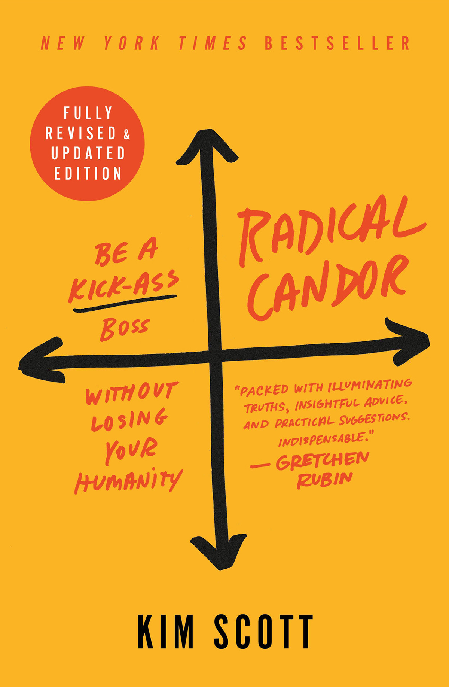
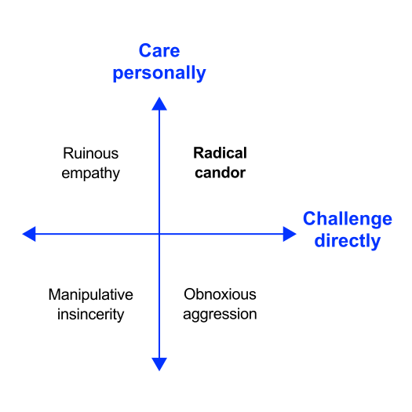

Feedback
How to give valuable feedback and help people to thrive?
University of Applied Sciences Neu-Ulm
January 1, 2023
Preface
Motivation
Challenging others and encouraging them to challenge you helps build trusting relationships because it shows 1) you care enough to point out both the things that aren’t going well and those that are and that 2) you are willing to admit when you’re wrong and that you are committed to fixing mistakes that you or others have made. Scott (2019)
Foundation
This unit is inspired by and (partly) based on the book Radical Candor by Scott (2019).
With Radical Candor, Kim has bottled some of Google’s magic and shared it with the world. Shona Brown, former SVP Business Operations at Google
Kim Scott has a well-earned reputation as a kickass boss and a voice that CEOs take seriously… If you manage people—whether it be 1 person or a 1,000—you need Radical Candor. Now. Daniel Pink, author of NYT bestseller Drive

Introduction
Let’s discuss
Who are the best leaders you have worked for in your career?
What made them so exceptional? What can you learn?
Tell a story about the worst boss you ever had.
What did they do that made them so bad? How can you avoid those mistakes?
Take 5 minutes to reflect on these questions and another 7 minutes discuss your findings with your neighbor(s).
Radical candor
Leadership
As a leader, a significant aspect of your job is dealing with the personal and professional problems of the people that report to you or work with you in a less hierarchical setting.
Kim Scott1 even states that relationship maintenance should be a top priority when you move into a leadership position.
She advises leaders in radical candid communication (Scott 2019)—straightforward and humanizing management, guided by two main principles: “caring personally” and “challenging directly”.
Radical candor framework

The framework is meant as a compass to guide individual conversations to a better place.
Being radical candid, you can and should
- criticize—but only with the noble aim to help see mistakes and correct them
- praise—but make it contextualized and specific, so people know you did notice their achievements.
You were also born with a capacity to connect, to care personally. Somehow the training you got to “be professional” made you repress that. Well, stop repressing your innate ability to care personally. Give a damn! Scott (2019)
Building trusting relationships
Let your team be fully engaged in the work, try to better understand the needs of your team members, and make their work meaningful to them.
To build trusting relationships with your team, Scott (2019) recommends the following:
- Practicing self-care
- Without personal care, you can’t build radically candid relationships—integrate work and life and find a self-care method that makes you feel like your best self.
- Giving autonomy
- When people feel a sense of agency and autonomy, they choose to bring their best selves to their work—don’t force someone to do his/her best.
- Respecting boundaries
- Make an effort to learn about your team mates’ whole selves, while being conscious of their limits—stay open to new perspectives, tune in to your own emotions, and find out how to deal with others’ emotions.
Science
Let’s do some reading.
Trust in organizations
Read Dirks and Ferrin (2001)
- Understand the two different models of how trust operates in organisational settings
- Summarize the direct effects (i.e., what main constructs is trust affecting) and the moderating effects (i.e., which relationships is trust effecting)
- Find examples for work settings with strong and weak situational strength
- Discuss the findings in the group, clarify any issues of understanding and identify surprising findings
- Discuss how communication relates to situation strength
- Prepare a brief presentation to summarizes your findings (approx. 10 minutes)
- Difference of the two models
- Examples for work settings for context in which the models work
- Your thoughts on communication
- The most surprising finding
Leading from within
Read Rubin, Munz, and Bommer (2005)
- Understand the concepts transformational leadership, emotional intelligence, leader agreeableness, positive affectivity
- Summarize how the constructs relate (logical argument and empirical findings)
- Discuss the concepts in the group, clarify any issues of understanding and discuss surprising findings
- Discuss how emotional intelligence and leader agreeableness may relate to communication (not covered in the paper)
- Prepare a brief presentation to summarizes your findings (approx. 10 minutes)
- Concepts and relationships
- Your thoughts on communication
- Example that illustrates these
- The most surprising finding
Some communication guidance
Getting feedback
To built trust, you should first ask for radically candid guidance—seeing you react well to criticism will naturally build your team’s trust and their respect.
Scott (2019) proposes following steps to take when asking a team for criticism.
- Step #1: Request public criticism
—foster trust and psychological safety - Step #2: Kick things off with a question
—what can I … ? - Step #3: Push through discomfort to get answers
—wait a few seconds - Step #4: Manage your response
—listen with the intent to understand, don’t get defensive - Step #5: Demonstrate your gratitude
—reward the candor by getting it and working to address it
Giving feedback
Once you get the ball rolling and your employees are gaining confidence in giving you guidance, you need to start giving them guidance in return.
Before you offer praise or criticism, do these three things: get clear in your own mind about why your feedback is helpful, share your intention to be helpful, and clearly show what is good or bad.
Scott (2019) offers some guiding principles to help you commit to radical candor and to best set up your employees for sincere feedback:
- Focus #1: Humility—your goal is shared understanding
- Focus #2: Helpfulness—you are doing this to help
- Focus #3: Immediacy—in the moment, or shortly thereafter
- Focus #4: In-person—not via text
- Focus #5: Public praise, private criticism
- Focus #6: Caring personally does not mean personalizing
Getting to the CORE
In order to make sure your praise tells the other person what was good and shows them what to do more of, you can use the CORE method.
- Context—what is the specific situation?
- Observation—what was said or done?
- Result*—what is the most meaningful consequence to you and to them?
- NExt steps—what are the expected next steps?
Example: “After the meeting, when I told you that you said ‘um’ a lot and recommended a speech coach (C), you made a brush-off gesture (O). This makes me feel like you weren’t hearing me and won’t go to the speech coach I’m recommending, which would be a shame because if you stop saying ‘um’ so much, you’ll be more effective (R). Go to the damn speech coach (E)!”
Gauging feedback
Pay attention to the other person’s reaction to see your feedback is landing the right way.
Respond accordingly:
- You encounter a strong emotion?
Acknowledge the emotion and avoid the temptation to let go of your challenge. - Not sure if you’re being heard?
Check to see if you’re understanding their reaction. - Are you being rebuffed?
Let the person know that you don’t feel heard and that this is important.
One effective way to keep tabs on how your feedback is landing is to ask your employees and colleaguesto rate your feedback.
Encouraging guidance
Making sure your team learns how to effectively give guidance to one another is essential to building a radically candid workplace.
- Conflict resolution: Commit your team members to challenging directly and caring personally bynever allowing an employee to talk about one of their colleagues while they’re not present.
- Public recognition of accomplishments and mistakes: Create valuable learning opportunities by asking team members to get comfortable sharing their experiences.
Sparkling collaboration

Challenges
You want to learn how to give (and receive) more helpful feedback? Here are three challenges that might help you along the way.
- Level 1: Start a feedback diary. Note situations where you had to give someone praise or criticism. Write down what you said. Analyse if your feedback was radically candid. Try to reframe your non-radically candid praise or criticism so that it’s more sincere and specific.
- Level 2: Give feedback, multiple times. Practice radical candor by applying the framework and the practices outlined in the workbook. Reflect on how the techniques have improved your conversations and relationships (including trust).
- Level 3: Spread the word. Teach your team at work, a group of friends or your family about the radical candor framework (e.g., using the one-pager and the workbook). Introduce Whoops-a-Daisy & the Killer Whale and practice it at least once a week over the upcoming weeks (remember the CORE-model). Reflect on how the feedback culture and your relationships have changed.
Reading list
For digging deeper, I recommend reading the articles of the reading exercise (again) plus following articles/books:
- Feedback-seeking: Ashford (1986), Ashford, Blatt, and VandeWalle (2003), Gong et al. (2017), Wu, Parker, and De Jong (2014)
- Feedback-seeking and proactivity at work: Grant and Ashford (2008)
- Formative feedback: Shute (2008)
- Feedback giving and receiving: Stone and Heen (2014)
- Destructive criticism: Baron (1988), Raver et al. (2012)
- Fundamental attribution error: Tetlock (1985)
If you want to learn more about how to achieve radical candor, please read the book (Scott 2019) and check the additional resources on the website.
Q&A
Literature
Footnotes
A leader of high-profile teams in the Silicon Valley at Google, Apple and Twitter.